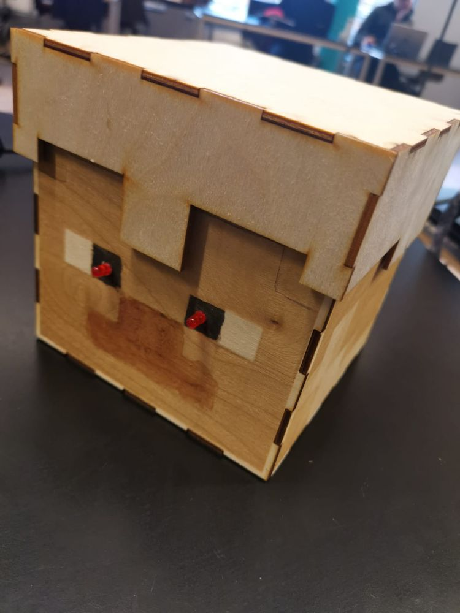
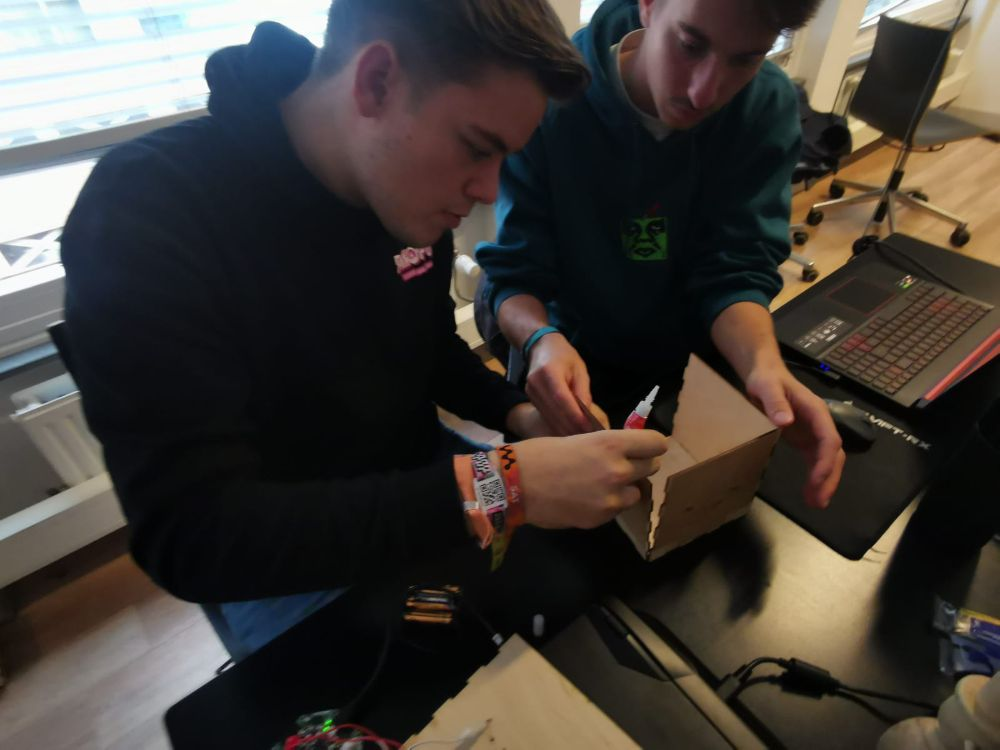
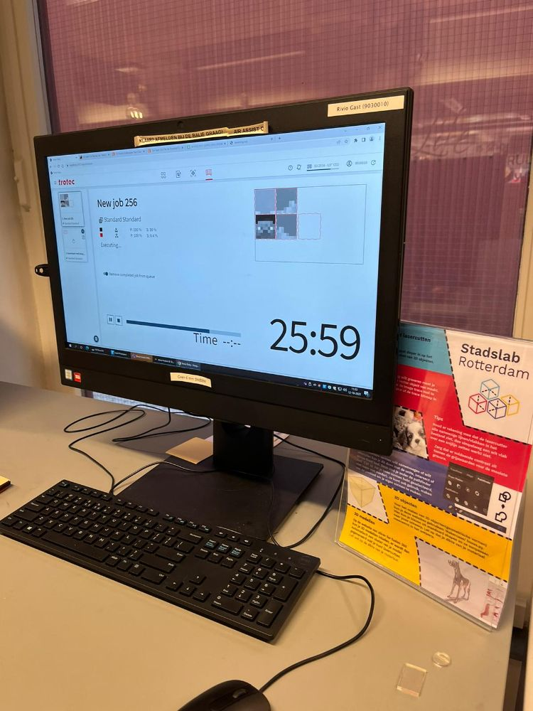
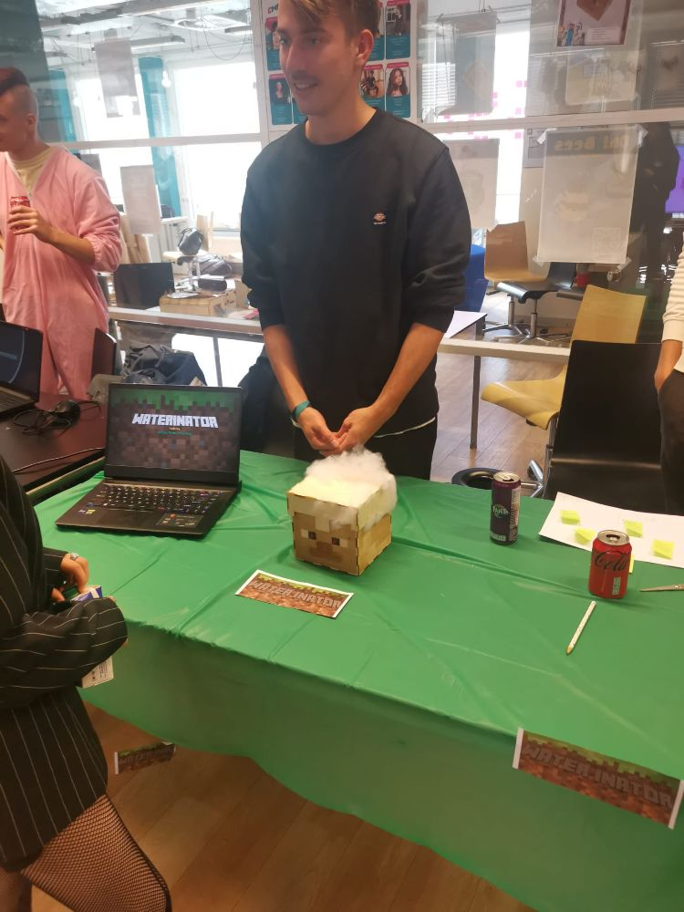
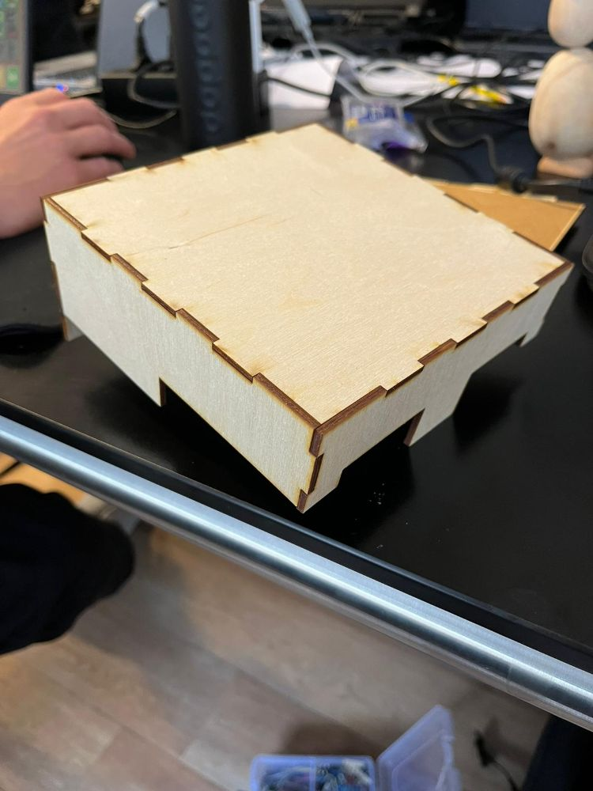
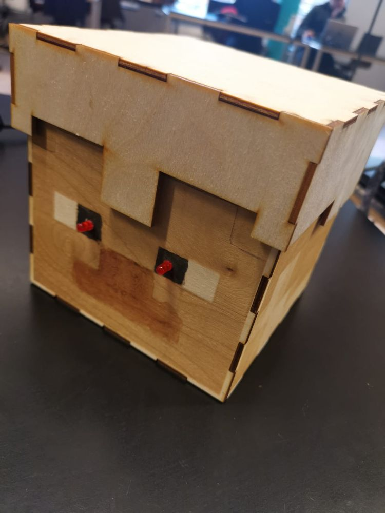
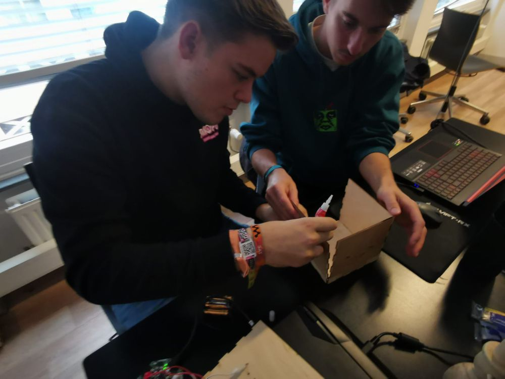
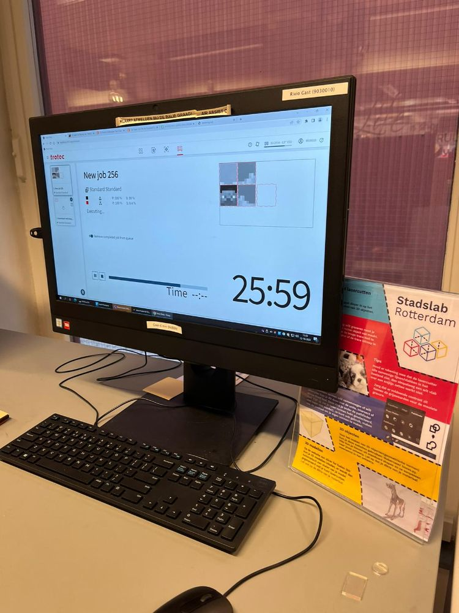
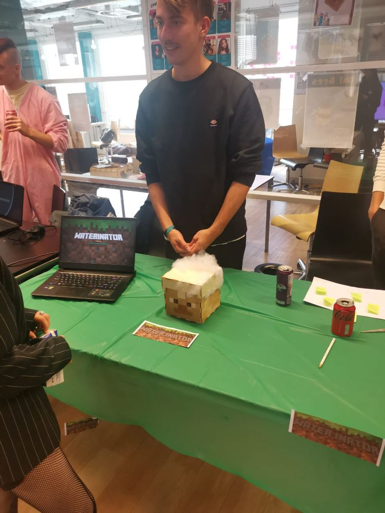
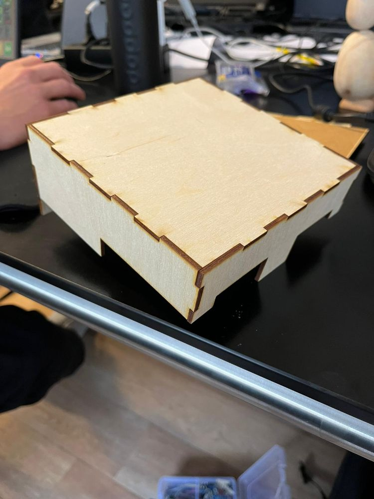

info
dit project is tijdens periode 1 van jaar 1 gemaakt. de waterinator is een robot die ervoor zorgt dat je nooit vergeet je waterinator te drinken tijdens het gamen.
   \ minecraft steve editie. Gemaakt door Sem, Stijn, martijn en Olivier
dit project is tijdens periode 1 van jaar 1 gemaakt. de waterinator is een robot die ervoor zorgt dat je nooit vergeet je waterinator te drinken tijdens het gamen.
   \ 